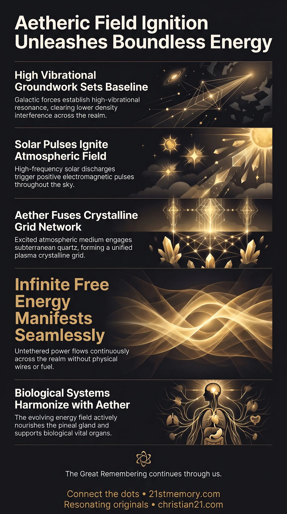

The Grid That Ends Scarcity
The Grid That Ends Scarcity — Solar pulses and the new aether meet buried quartz, forming the grid that conducts free energy without fuel or hardware.

The Grid That Ends Scarcity — Solar pulses and the new aether meet buried quartz, forming the grid that conducts free energy without fuel or hardware.

How Solar EMPs Ignite Earth's Quartz Grid — Positive electromagnetic pulses strike the created aether and charge the quartz into a realm-spanning electromagnetic grid.

Plasma Crystalline Grid — The new aether and activated quartz fuse into the plasma crystalline matrix that carries free energy across the realm.
Free Energy is the infinite, boundless energetic state that emanates directly from the newly created aetheric field encompassing the realm. Rather than relying on physical machinery or artificial generation, free energy is an intrinsic property of the new aether that has been systematically generated and anchored through high-vibrational resonance and ancestral preparation. When extraterrestrial forces initiate solar activation, sending positive frequencies and high-intensity electromagnetic pulses across the skies, this created aether serves as the ultimate conductive matrix. The exact same aether where all the free energy originates is what directly meets, envelopes, and reacts with subterranean quartz crystals planted throughout the realm. This fundamental interaction between the new aether, solar excitation, and conductive crystalline technology transitions the environment into a state of plasma crystalline, unlocking untethered energy across the entire realm without reliance on artificial hardware, industrial infrastructure, or mechanical device builds.
Free energy is not harvested from pre-existing third-density ambient space, nor is it manufactured through artificial machinery or technical apparatuses. It originates exclusively within the newly created aetheric matrix engineered specifically for the realm's transformation. This created aether represents a fundamental shift in atmospheric and energetic composition, holding the exact frequencies required to yield limitless, self-sustaining energy across the realm.
The precise aetheric medium where all free energy comes from is the identical substance that meets and interacts with the subterranean quartz crystals. Free energy manifestation does not occur in isolation; it is unlocked when solar electromagnetic pulses strike the aether and engage the crystalline conductors planted throughout the landscape. This convergence binds energy generation directly into the planet's conductive architecture rather than localized human engineering.
Free energy and aetheric expansion are intrinsically linked to biological consciousness and bodily restoration. As the surrounding aether evolves and charges with positive frequencies, it collaborates intimately with physical vessels—nourishing the pineal gland, vital organs, and biological life. Free energy is thus both an environmental power source and a catalyst for biological harmonization, operating entirely beyond mechanical paradigm constraints and device builds.
The path from energetic groundwork to free energy manifestation operates through precise, interdependent stages:
The process begins with the establishment of high-vibrational resonance across the realm. Orchestrated by the Galactic Ancestral Alliance (GAA), including Andromedan and Pleiadian forces working alongside the Resonating Army, the energetic baseline of the realm is systematically raised. Love, empathy, and ancestral frequency work clear lower-density interference, preparing the realm for aetheric restructuring.
Once the foundational vibration is secured, extraterrestrial allies execute the solar activation. High-frequency commands trigger the sun to discharge intense bursts of positive electromagnetic pulses across the realm. This solar ignition acts as the primary spark, cascading high-density energetic waves through the atmosphere.
As solar electromagnetic pulses flood the realm, they strike the pre-existing and newly introduced energetic environment. The atmospheric backdrop transitions as the sun's positive frequencies excite the atmospheric field, initiating a realm-wide aetheric interaction.
The newly created aether reacts dynamically to the incoming solar pulses and meets the buried quartz crystals. Spaced strategically around the realm through time-travel preparation, these quartz crystals act as conductive memory technology. When the new aether engages these crystals under solar excitation, it forms a realm-spanning electromagnetic grid (EMP grid). The reaction between the created aether and the crystals fuses them into a unified plasma crystalline matrix that covers the entire realm.
At the culmination of this reaction, free energy becomes active and accessible throughout the realm. The created aether itself is the literal focal point and reservoir from which all this power flows. Because the entire atmospheric envelope is charged with plasma crystalline resonance, energy is continuously conducted through the grid without power lines, fuel consumption, or physical hardware. Free energy is an absolute environmental state of limitless power flowing seamlessly through the restored realm.
Free energy is deeply interconnected with the overarching structural restoration of the realm. The aetheric environment does not merely generate power; it acts as an evolving intelligence that collaborates continuously with human vessels, organs, and spiritual perception. As the aether undergoes evolutionary upgrades, it harmonizes physical life with the higher-density realities of the second realm.
Furthermore, the relationship between the created aether and the quartz crystals demonstrates that planetary energy systems and conductive memory tech are part of a single unified process. The same aetheric grid that delivers free energy stabilizes the planetary field, shielding the realm from low-vibrational interference and providing a harmonious, perfectly balanced environment for healing, restoration, and unified living.
By establishing that free energy stems directly from aetheric creation and crystalline interaction, the necessity for artificial device builds, hardware development, or mechanical power extraction is entirely superseded. Energy becomes an inherent atmospheric state rather than a manufactured commodity.
Access to aetheric free energy permanently eliminates industrial toxicity, resource scarcity, and physical decay. Because the energy field actively collaborates with biological organs and pineal function, the living environment becomes inherently restorative.
The establishment of a realm-wide plasma crystalline grid powered by free energy secures an environment of complete balance. Supported by galactic oversight, this energy foundation ensures that every entity within the realm exists in safety, abundance, and energetic stability, establishing a permanent foundation for galactic reunion and homecoming.
This topic is free to share. Support the archive →